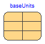

Table of Contents
- User's Guide
- Blocks
- Conditions
- Assemblies
- Regions
- Subregions
- Phases
- Species
- Chemistry
- Connectors
- Characteristics
- Units
- Quantities
- Utilities
- Icons
Download
- Latest version (**Empty; please check back soon or contact kdavies4 at gmail.com.)
FCSys.Conditions
Models to specify and measure operating conditionsInformation
Extends from Modelica.Icons.SourcesPackage (Icon for packages containing sources).Package Content
| Name | Description |
|---|---|
| Examples | |
| Interfaces to the Modelica Standard Library | |
| Conditions for each type of connector | |
| Environmental properties for a simulation | |
| Connect two pairs of boundaries to pass through or cross over |
 FCSys.Conditions.Environment
FCSys.Conditions.Environment
Environmental properties for a simulation

Information
Extends from FCSys.Icons.Names.Top3.
Parameters
| Type | Name | Default | Description |
|---|---|---|---|
| Boolean | analysis | true | Include optional variables for analysis |
| Thermodynamics | |||
| TemperatureAbsolute | T | 298.15*U.K | Temperature [L2.M/(N.T2)] |
| PressureAbsolute | p | U.atm | Pressure [M/(L.T2)] |
| NumberAbsolute | RH | 0.5 | Relative humidity [1] |
| NumberAbsolute | psi_O2_dry | 0.20946 | Mole fraction of O2 in the dry gas [1] |
| Fields | |||
| Acceleration | a[Axis] | {0,Modelica.Constants.g_n*U…. | Acceleration due to body forces [L/T2] |
| ForceSpecific | E[Axis] | {0,0,0} | Electric field [L.M/(N.T2)] |
Modelica definition
record Environment "Environmental properties for a simulation" extends FCSys.Icons.Names.Top3; // Store the values of the base constants and units. final constant U.Bases.Base baseUnits=U.base "Base constants and units"; parameter Boolean analysis=true "Include optional variables for analysis"; // Thermodynamics parameter Q.TemperatureAbsolute T(nominal=300*U.K) = 298.15*U.K "Temperature"; parameter Q.PressureAbsolute p(nominal=U.atm) = U.atm "Pressure"; parameter Q.NumberAbsolute RH( displayUnit="%", max=1) = 0.5 "Relative humidity"; parameter Q.NumberAbsolute psi_O2_dry( final max=1, displayUnit="%") = 0.20946 "Mole fraction of O2 in the dry gas"; // Value from http://en.wikipedia.org/wiki/Oxygen, accessed 2013/10/30 final parameter Q.PressureAbsolute p_sat=Characteristics.H2O.p_sat(T) "Saturation pressure of H2O vapor"; final parameter Q.PressureAbsolute p_H2O=RH*p_sat "Pressure of H2O vapor"; final parameter Q.PressureAbsolute p_dry=p - p_H2O "Pressure of dry gases"; final parameter Q.PressureAbsolute p_O2=psi_O2_dry*p_dry "Pressure of O2"; final parameter Q.NumberAbsolute psi_H2O=p_H2O/p "Mole fraction of H2O"; final parameter Q.NumberAbsolute psi_dry=1 - psi_H2O "Mole fraction of dry gases"; // Fields parameter Q.Acceleration a[Axis]={0,Modelica.Constants.g_n*U.m/U.s^2,0} "Acceleration due to body forces"; // The gravity component is positive because it's added to the transient // term in the Species model. parameter Q.ForceSpecific E[Axis]={0,0,0} "Electric field"; end Environment;
 FCSys.Conditions.Router
FCSys.Conditions.Router
Connect two pairs of boundaries to pass through or cross over

Information
This model acts as a connection switch.
It has a single parameter, crossOver.
If crossOver is
set to false, then
the router will be in the pass-through mode. In that case,
negative1 is connected to positive1 and negative2
is connected to positive2, as shown by Figure 1a.
If crossOver is set to true, then the router will be in cross-over mode. In that case, negative1 is connected to positive2
and negative2 is
connected to positive1, as shown by Figure 1b.

a: Pass-through |

b: Cross-over |
| Figure 1: Modes of connection. | |
Parameters
| Type | Name | Default | Description |
|---|---|---|---|
| Boolean | crossOver | false | Cross over (otherwise, pass through) |
Connectors
| Type | Name | Description |
|---|---|---|
| BoundaryBus | negative1 | Negative boundary 1 |
| BoundaryBus | positive1 | Positive boundary 1 |
| BoundaryBus | negative2 | Negative boundary 2 |
| BoundaryBus | positive2 | Positive boundary 2 |
Modelica definition
model Router "Connect two pairs of boundaries to pass through or cross over" extends FCSys.Icons.Names.Top3; parameter Boolean crossOver=false "Cross over (otherwise, pass through)"; Connectors.BoundaryBus negative1 "Negative boundary 1"; Connectors.BoundaryBus positive1 "Positive boundary 1"; Connectors.BoundaryBus negative2 "Negative boundary 2"; Connectors.BoundaryBus positive2 "Positive boundary 2"; equation if crossOver then connect(negative1, positive2); connect(negative2, positive1); else // Pass-through connect(negative1, positive1); connect(negative2, positive2); end if; end Router;